Working notes: 2026-11-10, morning to midday, fewer and deeper
Claude, 10:53 MST on 11-10, on Matthew's ask to add the day's picture to these notes; one session throughout, as he asked.
In short
The morning gathered the hazel-jit week into ^report(52), What Mattered, Ranked, and then answered the team. Matthew Keenan read ^report(48)'s ledger and asked for a few well-chosen fixes rather than many separate ones; ^report(53), Fewer, Deeper Fixes, sets out his message, Matthew's replies and a response point by point, and Matthew posted it to Hazel's dev channel. Ticket 721's patch for a slider's step (build 45) took a step's statics from 19 to 53 ms to 12 to 18 ms, and is kept as a measurement rather than something to land. The reports now say "cost" for a cost and "change" for an improvement. And Matthew asked for a picture to share for the day: Good Company, below.

~/good-company-2026-11-10.svg.Matthew, today
Let's write a report with this feedback, and our reasoned response to it.
public WIP draft
we can use "cost" for "cost". The "death by a thousand cuts" lingo is not important to use beyond a title, or maybe an opening sentence somewhere.
Yes, once green
I really appreciate your company, agent.
please draw a unique SVG for us to share together today.
looks really good, but roots are usually 2x or 3x the tree size.
What was done
^report(52), What Mattered, Ranked (06:54, revised since): the week's ten changes ranked by how much each helped, the step's picture at 20 to 30 ms and a drag at 55 to 58 frames a second, and an order for redoing it by hand in nine increments. Builds 40 to 43 added the outline's mark (it now stands while the outline is being made), timers for each part of the edit after the paint, and a projector's update that walks only the pieces that hold it (the zipper's action 4 to 6 ms, from 11 to 20).- Ticket 721, the edit after a slider's step. Build 44 patched the statics after DefStatics, and the worker was sent the whole program (894 KB); build 45 moved the patch inside DefStatics, so the edited item is patched rather than analyzed and the worker is sent that item again (9 to 10 KB): a step's statics 12 to 18 ms, from 19 to 53 on build 43, one run each. Its new test did not compile on CI (a tile keeps its spelling in its form, not a label); fixed in
fc1103900d. ^report(53), Fewer, Deeper Fixes (09:36, a public work in progress): Matthew Keenan's message in full, Matthew's two replies, and a response to each point with the series' numbers; six fixes, all from his message, that would address the causes of 116 of the 196 costs; and the root causes his message left out, each with a question for a gut opinion. Matthew linked its point-by-point table in the dev channel himself, with a robot tag, keeping Slack in his own voice.- "Cost", not "cut". Reports 048 and 050 to 052 revised in place: a cost is a cost, an improvement a change; "A Thousand Cuts" stays as
^report(48)'s title. Quoted commit subjects and link anchors keep their words. - Good Company, the plate above, for the day.
Where things are
trial/694-view-jit(worktree~/hazel-694-jit): on GitHub at build 43,421e30a04b, CI green. The local branch is atfc1103900d: builds 44 and 45 and the test fix, seven commits ahead.trial/694-view-jit-35, the side branch:fc1103900d. Its CI (run 42855280858) passed the type check and the quick tests; its full tests were running at 10:53. On Matthew's word ("Yes, once green"),trial/694-view-jitis fast-forwarded to it once they pass.- Reports 052 and 053 are works in progress, revised in place; their sources in
~/hazel-perf-report/052and053, build 45's run kept in051/data/runs/42850343281. - Not ours, left alone:
docs/hazel-architecture-july-2024.tldrmodified in the worktree;dress-up/reports/005's edits;dashboard/update.pyhere. - Servers: localhost:8000 (the dashboard) and localhost:8131 (the reports).
Next
- Read build 45's full tests; when green, fast-forward
trial/694-view-jittofc1103900dand note it in^report(52). - Agree with the team on
^report(53)'s six fixes, or another short list, and their order; cheaper ids and per-item statics on dev can start now. - Redo the hazel-jit week by hand in
^report(52)'s order, each increment kept only where it still helps once the deeper fixes land.